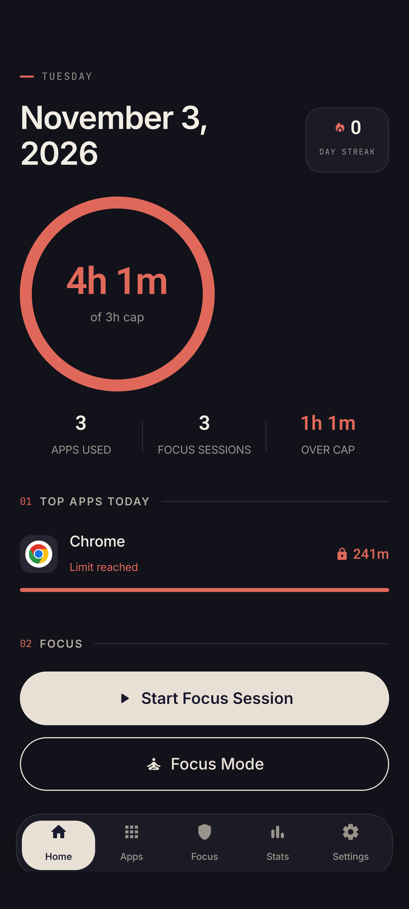
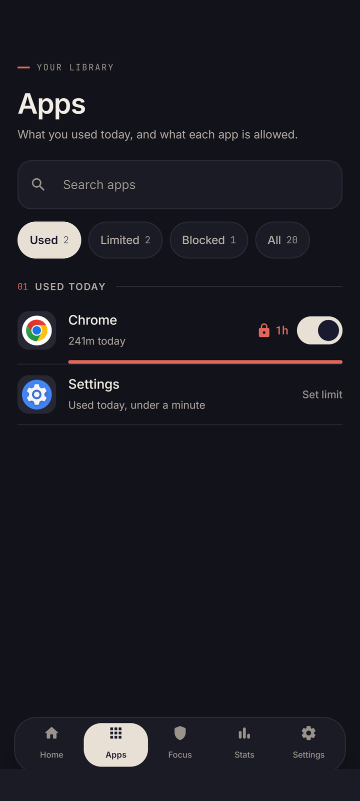
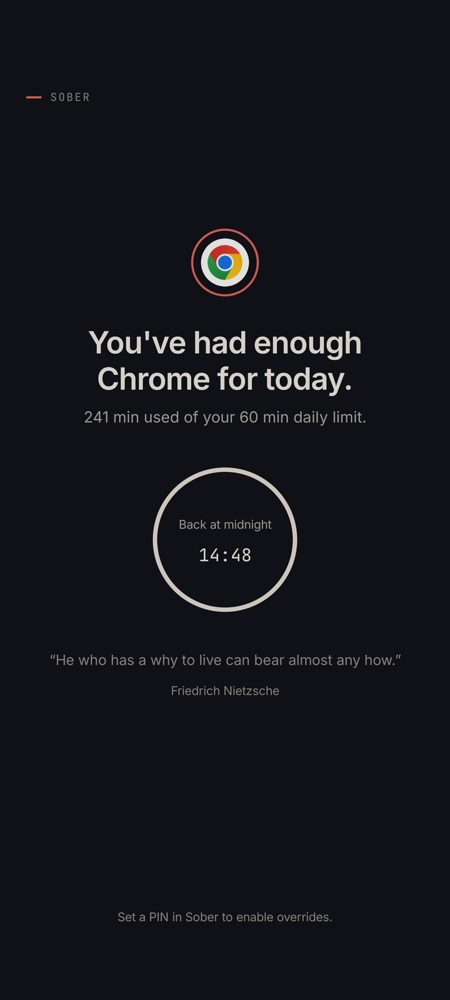
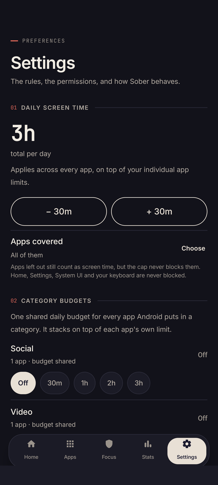

The problem
Willpower runs out.
Limits don't.
You allowed three hours. You used four.
The fix
So Sober draws the line.
One number you choose. Held all day.
Set once
Chrome: 4 hours.
Cap: 1 hour.
Per app, per category, per website.
At the line
Then it closes.
No debate. No doomscroll.
Your terms
Your rules, not
an algorithm's.
Bedtime. Lock mode. Pause everything.
On device
Nothing leaves
your phone.
No sign-up. No servers. No tracking.
No account—
No cloud sync—
No internet permission—
Sober
Less screen. More life.
Free · Open source · Android
github.com/rishabhx29/Sober